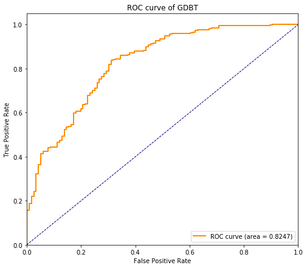
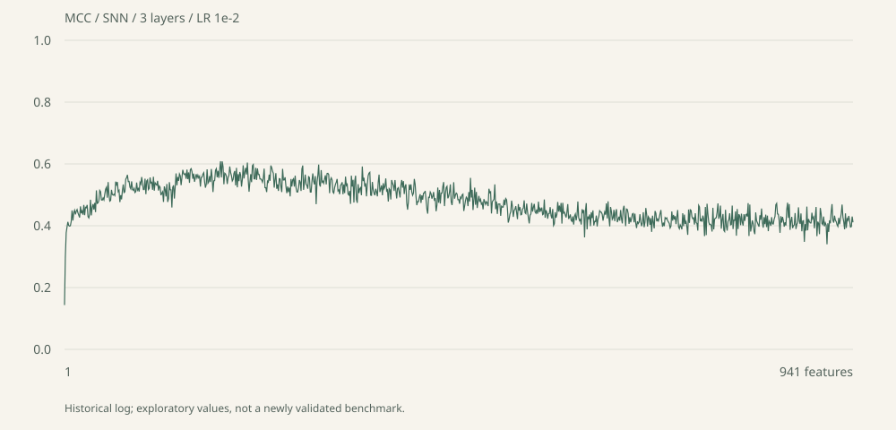

先建立一个可靠的起点
SVM、KNN、朴素贝叶斯与判别分析。让同一份数据，在不同的假设下被理解。
翻阅分类实验FIELD NOTES, KEPT WITH CARE
从第一个分类器，到一整片模型森林。
把研究生阶段的探索，装订成一册可以翻阅的记忆。
始于 2017 · 代码、曲线，以及尚未结束的好奇心
一次前向传播，也是一小步向前。结构示意

留下来的，
不只是代码。
按整理前的 Git 档案统计
每个数字，都有出处
01 / THE YEARS
提交记录没有写下全部生活，
却认真保存了每一次向前。
年份是仓库中的代码足迹，日期对应所列文件的首次提交；2023 为后续探索，不代表学制或毕业年份。
02 / A MAP OF CURIOSITY
从“能不能分类”，到“为什么这样分类”。
这些方向，拼成了当年的工作地图。
SVM、KNN、朴素贝叶斯与判别分析。让同一份数据，在不同的假设下被理解。
翻阅分类实验随机森林、梯度提升、深度森林与规则模型。在预测之外，寻找可以解释的线索。
翻阅树与规则FNN、CNN、SNN 与归一化变体；从激活函数、网络深度，到生成模型的学习。
翻阅神经网络肽序列、基因表达与生物数据分类。用 RNN、双向网络和胶囊网络探索新的表示方式。
翻阅序列实验Boruta、SVM-RFE、特征排序与 IFS。一步步增加特征，观察信息如何变成判断。
翻阅特征手记SMOTE、欠采样、多标签分类与交叉验证。准确率之外，也用 MCC 和混淆矩阵看问题。
翻阅不平衡学习以上为研究方向梳理，示意图用于说明方法；教程、开源实现和个人实验的来源见 README 与各文件注释。
03 / CONTACT SHEETS
从旧 Notebook 中取出的原图。
保留当时的颜色，也保留探索的痕迹。
点击照片可放大。原图是历史探索输出，未经本次复现实验验证，不作为模型性能排名。
04 / A CURVE WORTH KEEPING
给特征多一点，还是少一点？
16 份日志，留下 8 组配置的回答。

第 1 个特征 · MCC —
拖动滑块，查看对应特征步数的原始指标。横轴为特征数，纵轴为所选指标。
05 / TO BE CONTINUED
如今再翻开这些文件，能看到的远不止某一种算法：有基础工具的练习，有模型结构的尝试，也有把数据、评估和解释慢慢连起来的过程。
这次整理合并了重复的实验代码，修正了采样与训练流程。旧笔记和原始结果继续保存，让新的代码可以向前，也让当年的工作有迹可循。
阅读本次代码检视与整理记录